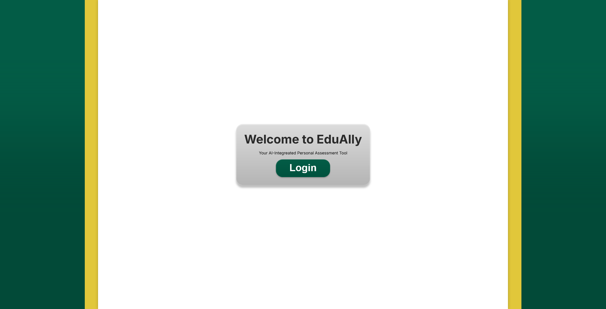
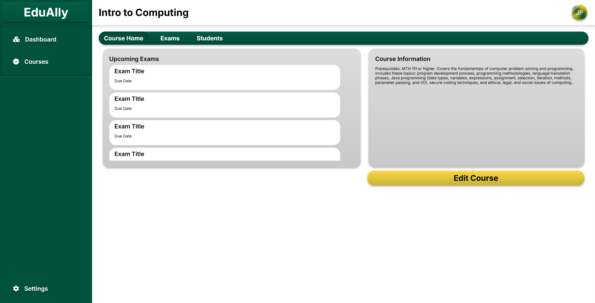
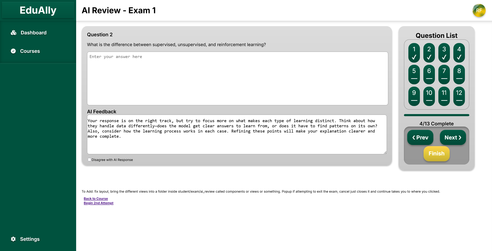

Officers:
Liam Davies
Chair
Nathan Shapiro
Co-Chair
Laura Fonseca-Llorca
Secretary
Alexis Adam
Secretary
Tyler Jones
Treasurer
Nick Barbera
Treasurer
The SUNY Brockport ACM SIGAI chapter, founded in Spring 2024, is part of the ACM Special Interest Group on Artificial Intelligence (ACM SIGAI). The group provides a platform for students and faculty to explore the latest advancements in AI research, foster collaboration, and share innovative ideas. With a focus on academic growth and career preparation, SUNY Brockport ACM SIGAI encourages members to participate in coding challenges, research projects, and networking opportunities, aiming to shape the next generation of AI professionals.
Share your projects, news, and research. Connect with fellow students for coding, interview resources, and more!
Chair
Co-Chair
Secretary
Secretary
Treasurer
Treasurer


